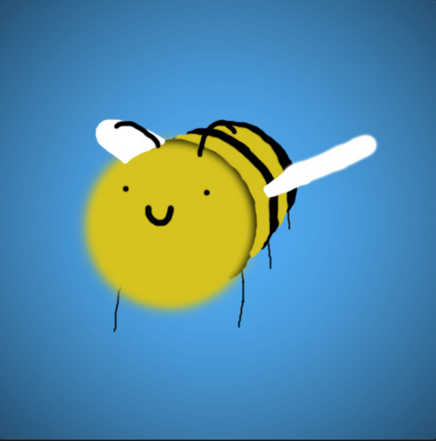
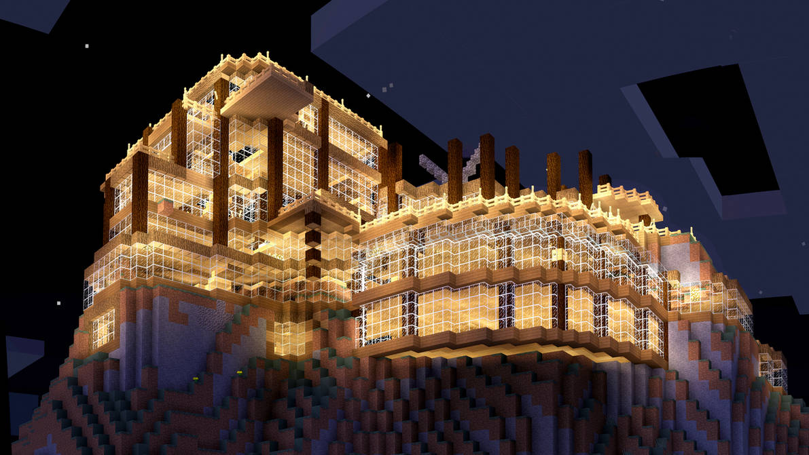
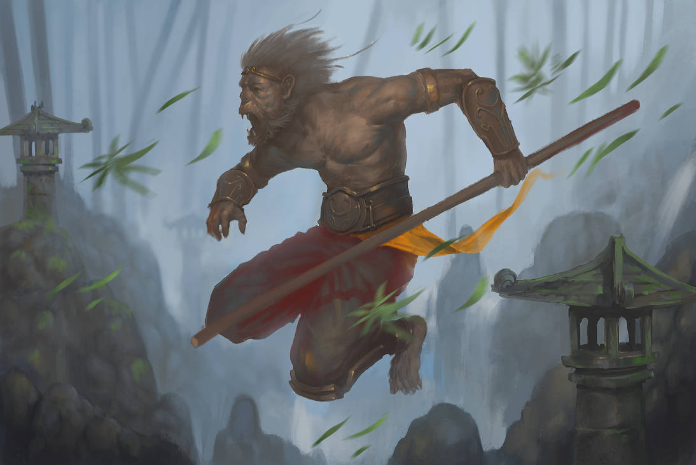
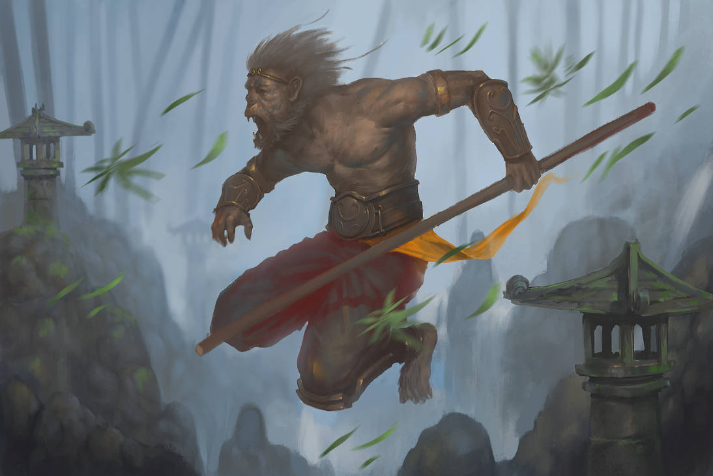

Teste 1
Abelha.
Teste 2
MINECRAFT!!!
Teste 3
Imagens lagadasss
 

Seção 4
Como sabesmos, isto é uma página de teste, sendo por isso, uma página teste.
Um Pequeno Poema:
Num reino de bits e bytes, onde o código floresce,
Uma página surge, uma provocação que não esmorece.
"Isto é uma página de teste!" grita em neon,
Desafia o leitor, como um enigma sem razão.
Pixels dançam, números se entrelaçam,
A irritação brota, como uma chama que não se apaga.
Testa os limites da paciência, num jogo de bytes,
"Isto é uma página de teste!" diz, sem respeitar direitos.
O cursor piscante, como um deboche insistente,
Desafia o entendimento, num ato imprevisível e ardente.
Linhas de código, como espinhos afiados,
"Isto é uma página de teste!" sussurra, deixando os nervos esticados.
Links quebrados, cores desordenadas,
Uma sinfonia de caos, sem regras delimitadas.
"Isto é uma página de teste!" proclama com zombaria,
Um desafio visual, uma experiência de agonia.
Mas no coração do caos, uma lição se esconde,
Que mesmo na irritação, um aprendizado responde.
"Isto é uma página de teste!" ecoa como um mantra,
Desafiando a mente, como uma prova que encanta.
Então, encare a irritação, abrace o desafio,
Nesta página de teste, onde o código é o fio.
"Isto é uma página de teste!" persiste no seu papel,
Um odio à frustração, mas também um convite ao novel.